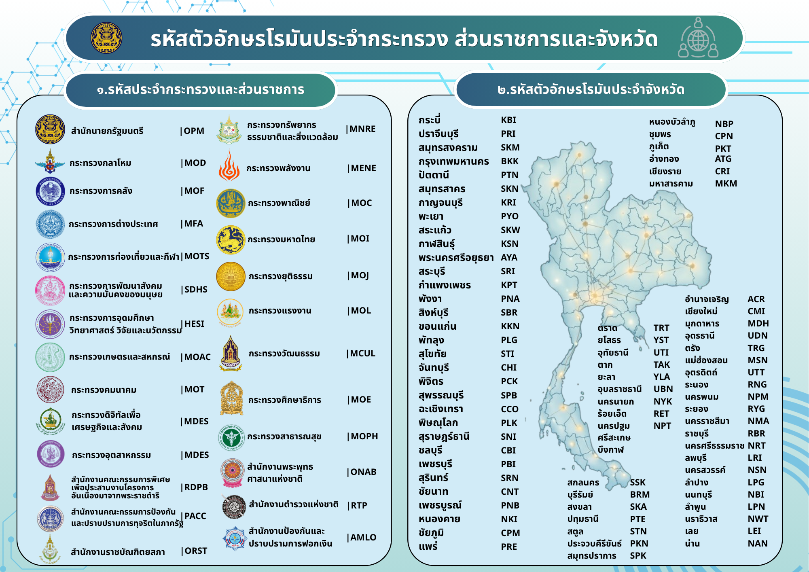
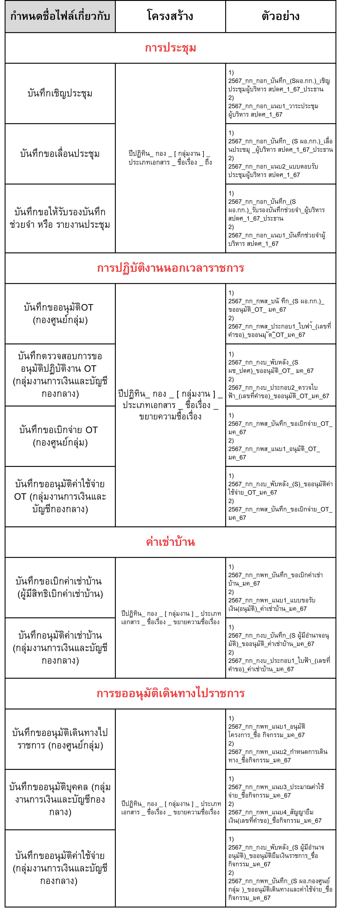
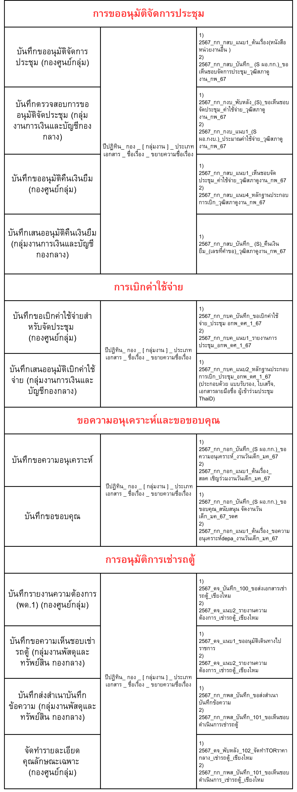
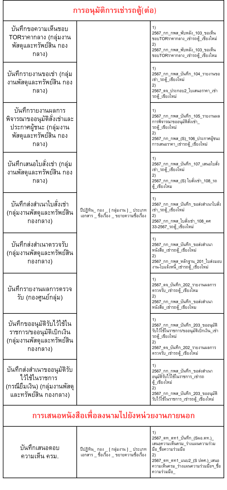

รหัสตัวอักษรโรมันประจำกระทรวง ส่วนราชการและจังหวัด

ตัวอย่างการกำหนดชื่อไฟล์



1. เป็นระบบใช้ลำดับข้อมูลเดิมอย่างสม่ำเสมอ
2. เข้าใจง่ายชื่อไฟล์ควรสื่อความหมายของเอกสาร
3. ค้นหาได้เร็วใช้ข้อมูลสำคัญที่ช่วยระบุเอกสารได้ชัดเจน
1. หลักการตั้งชื่อไฟล์
1
ใช้ข้อมูลที่จำเป็นต่อการระบุเอกสาร
เช่น วันที่ หน่วยงาน ประเภทเอกสาร ชื่อเรื่อง หรือผู้รับ ตามความเหมาะสมของเอกสาร
เช่น วันที่ หน่วยงาน ประเภทเอกสาร ชื่อเรื่อง หรือผู้รับ ตามความเหมาะสมของเอกสาร
2
เรียงข้อมูลตามโครงสร้างเดียวกัน
เมื่อเป็นเอกสารประเภทเดียวกันควรใช้ลำดับองค์ประกอบเหมือนกัน
เมื่อเป็นเอกสารประเภทเดียวกันควรใช้ลำดับองค์ประกอบเหมือนกัน
3
ใช้ตัวคั่นอย่างสม่ำเสมอ
แนะนำให้ใช้เครื่องหมาย _ เพื่อแยกข้อมูลแต่ละส่วนของชื่อไฟล์
แนะนำให้ใช้เครื่องหมาย _ เพื่อแยกข้อมูลแต่ละส่วนของชื่อไฟล์
4
ตรวจสอบก่อนนำไปใช้
ตรวจสอบวันที่ หน่วยงาน เลขหนังสือ และชื่อเรื่องก่อนบันทึกชื่อไฟล์
ตรวจสอบวันที่ หน่วยงาน เลขหนังสือ และชื่อเรื่องก่อนบันทึกชื่อไฟล์
2. โครงสร้างชื่อไฟล์เดี่ยว
2.1 ไฟล์เดี่ยว — ทุกประเภท
วันที่_กองหรือศูนย์หรือกลุ่ม_กลุ่มงานหรือฝ่าย_ประเภทเอกสาร_ผู้ลงนาม_ชื่อเรื่อง_ผู้รับ
ตัวอย่าง
31082569_กองเทคโนโลยี_ฝ่ายพัฒนาระบบ_บันทึกข้อความ_ผู้อำนวยการ_รายงานผลการดำเนินงาน_สำนักบริหาร
31082569_กองเทคโนโลยี_ฝ่ายพัฒนาระบบ_บันทึกข้อความ_ผู้อำนวยการ_รายงานผลการดำเนินงาน_สำนักบริหาร
2.2 ไฟล์เดี่ยว — ร่างหนังสือ
วันที่_ตัวย่อส่วนราชการ_เลขประจำส่วนราชการ_ลำดับหนังสือส่งออก_ผู้ลงนาม_ชื่อเรื่อง_ผู้รับ
2.3 ไฟล์เดี่ยว — หนังสือลงนามแล้ว
วันที่_ตัวย่อส่วนราชการ_เลขประจำส่วนราชการ_เลขที่หนังสือส่งออก_ลำดับหนังสือส่งออก_ผู้รับ
3. แนวทางสำหรับชุดเอกสารครบชุด
เมื่อเอกสารหนึ่งเรื่องประกอบด้วยหลายไฟล์ ควรแบ่งข้อมูลตามส่วนของเอกสารเพื่อให้แต่ละไฟล์มีชื่อที่สัมพันธ์กันและค้นหาได้ง่าย
| ส่วนของเอกสาร | ข้อมูลหลักที่ใช้ | ตัวอย่างแนวคิด |
|---|---|---|
| ข้อมูลส่วนกลาง | วันที่, กอง/ศูนย์/กลุ่ม, กลุ่มงาน/ฝ่าย, ครั้งที่ | ใช้ข้อมูลร่วมกันทั้งชุด |
| บันทึก | ผู้ลงนาม, ผู้รับ, ชื่อเรื่อง | ระบุรายละเอียดของเอกสารหลัก |
| เอกสารแนบ | ประเภทเอกสาร, ชื่อเรื่อง | ช่วยแยกเอกสารแนบแต่ละรายการ |
| หนังสือ (ร่าง) | ตัวย่อส่วนราชการ, เลขประจำส่วนราชการ, ลำดับหนังสือส่งออก, ผู้ลงนาม, ผู้รับ, ชื่อเรื่อง | ใช้สำหรับเอกสารร่างก่อนดำเนินการ |
4. วิธีกรอกข้อมูลแต่ละส่วน
วันที่ของเอกสาร
ใช้วันที่ที่เกี่ยวข้องกับเอกสารให้ถูกต้องและใช้รูปแบบเดียวกันทั้งระบบ
หน่วยงาน / ส่วนงาน
ใช้ชื่อกอง ศูนย์ กลุ่ม หรือฝ่ายตามชื่อที่หน่วยงานกำหนด เพื่อป้องกันการสะกดหลายรูปแบบ
ประเภทเอกสาร
ระบุประเภทให้ตรงกับเอกสารจริง เช่น บันทึกข้อความ หนังสือ หรือเอกสารแนบ
ชื่อเรื่อง
ใช้ข้อความที่กระชับและสื่อสารเนื้อหาหลักของเอกสาร ไม่ควรยาวเกินความจำเป็น
ผู้รับ / ผู้ลงนาม
ระบุเฉพาะเมื่อเป็นองค์ประกอบที่จำเป็นตามโครงสร้างของเอกสารนั้น
5. ข้อควรหลีกเลี่ยง
- ตั้งชื่อไฟล์สั้นเกินไปจนไม่ทราบว่าเป็นเอกสารอะไร
- ใช้ชื่อเดียวกันกับเอกสารคนละเรื่อง
- ใช้รูปแบบวันที่ไม่สม่ำเสมอ
- ใช้ชื่อหน่วยงานหลายรูปแบบสำหรับหน่วยงานเดียวกัน
- ใส่ข้อมูลที่ไม่จำเป็นมากเกินไปจนชื่อไฟล์ยาวและอ่านยาก
- ไม่ตรวจสอบชื่อไฟล์ก่อนนำไปใช้งานจริง
6. ขั้นตอนก่อนบันทึกชื่อไฟล์
- ตรวจสอบประเภทของเอกสาร
- เลือกโครงสร้างชื่อไฟล์ที่ตรงกับเอกสาร
- กรอกข้อมูลที่จำเป็นให้ครบถ้วน
- ตรวจสอบลำดับข้อมูลและการสะกด
- ตรวจสอบชื่อไฟล์ที่ระบบสร้าง
- คัดลอกและนำไปใช้กับเอกสารจริง
หมายเหตุ: แนวทางนี้จัดทำเพื่อใช้งานร่วมกับระบบ NAMEFLOW และควรใช้ควบคู่กับหลักเกณฑ์หรือระเบียบที่หน่วยงานกำหนด